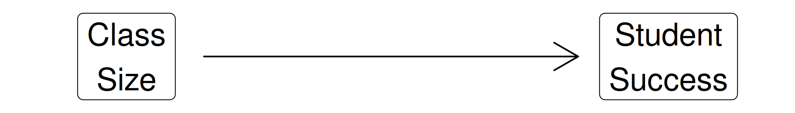
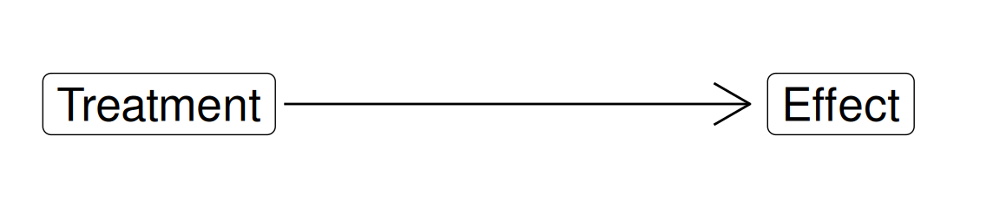
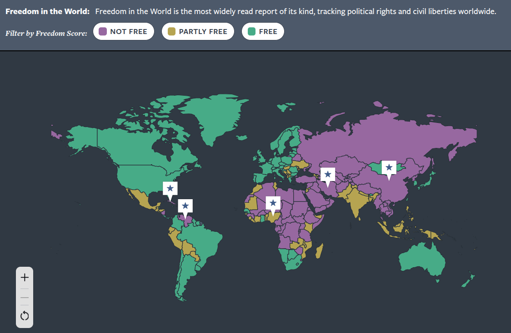
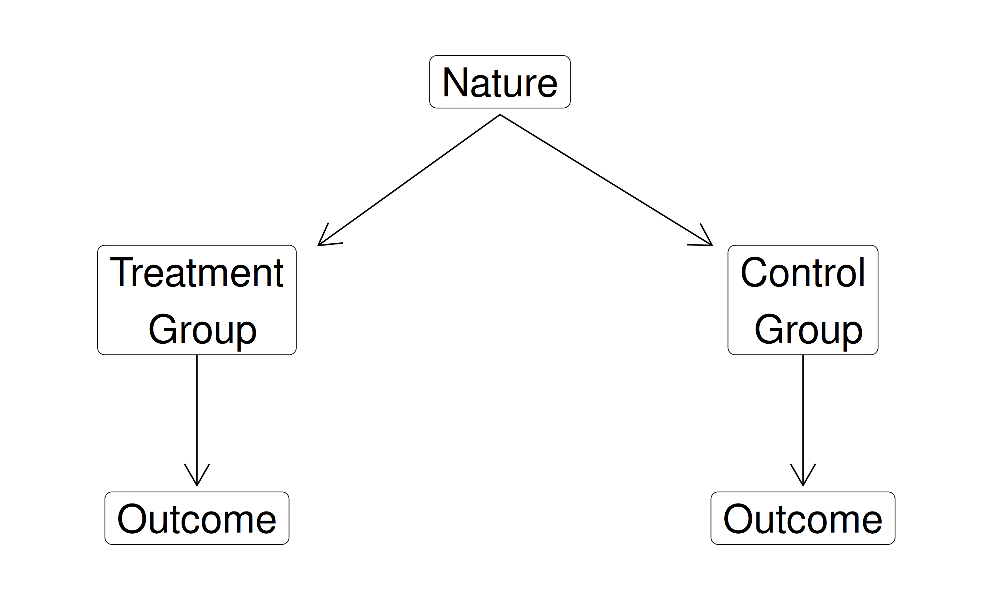
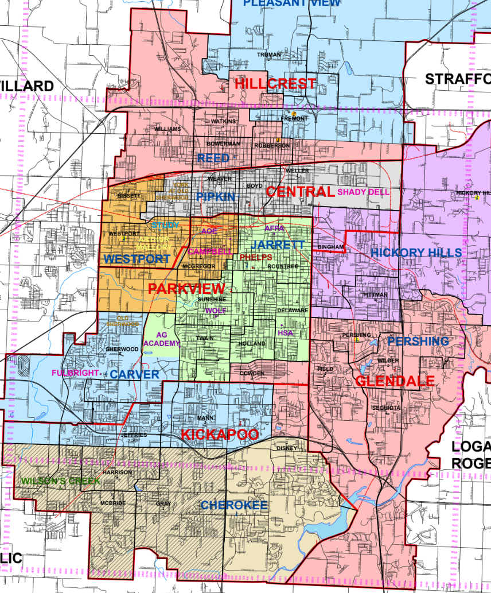
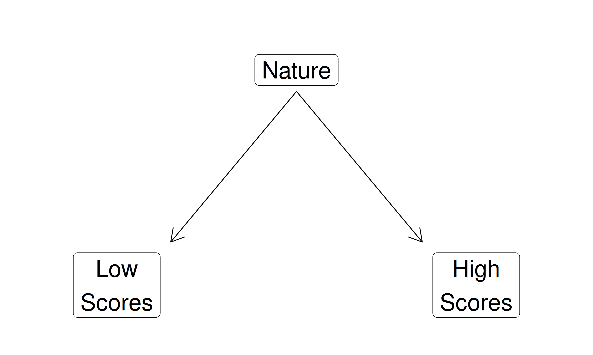
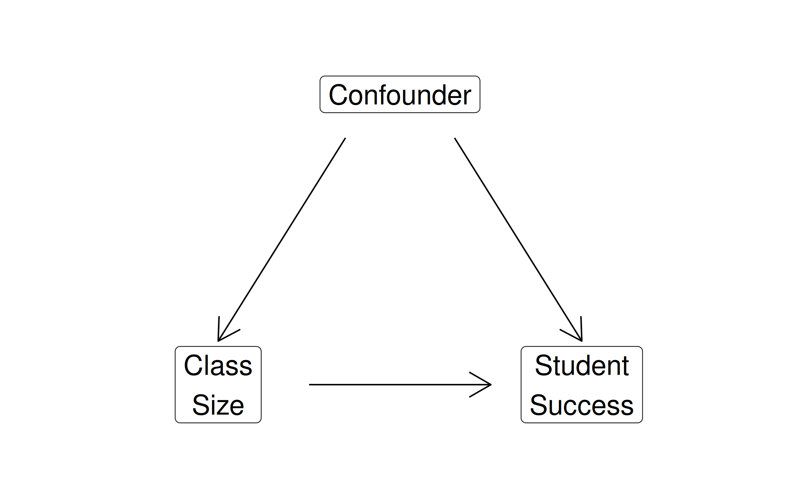

Today’s Agenda
Controlled Comparison Analysis
- Making causal arguments by adjusting for confounders
Justin Leinaweaver (Spring 2026)
The aim of our class is to generate useful knowledge by analyzing the empirical world
Evaluate the measures for validity and reliability
Describe the distribution of each measure (univariate analysis)
Describe the relationship between two measures (bivariate analysis)
Build a causal argument (multivariate analysis)
Building a Causal Argument
“Causal inference refers to the process of drawing a conclusion that a specific treatment (i.e. intervention) was the ‘cause’ of the effect (or outcome) that was observed” (Frey 2018).

Building a Causal Argument


Randomized Controlled Trials (RCTs)

The Challenge of Observational Data
The Challenge of Observational Data

The Challenge of Observational Data

Making Controlled Comparisons

Our Challenge
Estimating Causal Effects Using Observational Data



The Data Generating Process (DGP)

The Data Generating Process (DGP)

Making Controlled Comparisons

Pollock & Edwards Exercise 1: Brainstorming Confounders
Hypotheses
In a comparison of individuals, younger people are more likely to vote Democratic than are older people.
In a comparison of countries, democracies are less likely than nondemocracies to initiate international military conflict.
In a comparison of individuals, southerners are less likely to turn out to vote than are nonsoutherners.
Pollock & Edwards Exercise 2: Spurious Relationships
Conclusions
Students who smoke (X) earn lower grades (Y) than students who do not smoke. Conclusion: Smoking causes poor grades.
Expectant mothers who drink bottled water (X) have healthier babies (Y) than do expectant mothers who do not drink bottled water. Conclusion: Drinking bottled water causes healthier babies to be born.
Tea drinkers (X) are more likely to be Democrats (Y) than are non–tea drinkers. Conclusion: Tea drinking causes people to become Democrats.
Making Controlled Comparisons

For Next Class
Chapter 7 Assessments (Part 2)
Exercise 4
Exercise 5